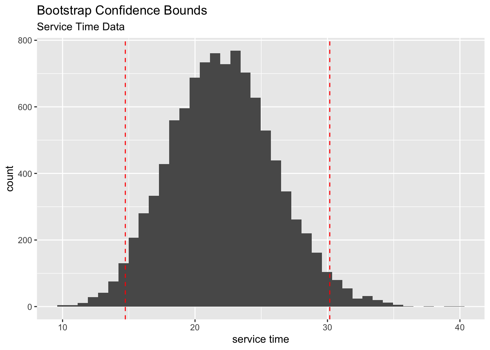

5 Permutation (Randomization) Tests
In Chapter 4, we looked at a new method (The Bootstrap) to find standard errors and confidence intervals. In this chapter we are going to learn a new method to perform hypothesis tests. These tests are called Permutation tests. Unlike classical hypothesis tests, these tests are NOT based on Central Limit Theorem. We will learn the basics of these tests and their limitations through 3 examples. Let’s dive in.
5.1 Alternative to the Two Sample t-test
Example 5.1 A sample of 16 healthy women aged 18 - 40 were randomly assigned to drink 24 ounces of either diet cola or water. Their urine was collected for three hours after ingestion of the beverage and calcium excretion (in mg.) was measured .
The researchers were investigating whether people who drink diet cola tend to loose more calcium out of their system, which would increase the amount of calcium in the urine for diet cola drinkers.
Ref: Larson, Amin, Olsen, and Poth, Effect of Diet Cola on Urine Calcium Excretion, Endocrine Reviews, 31[3]: June 2010.
Here are the summary statistics for the cola experiment.
| Cola | Water | |
|---|---|---|
| Sample Mean | 56.00 mg | 49.125 mg |
| n | 8 | 8 |
Now let’s look at the following dialog:
You: The difference in means = 6.875 mg, so it APPEARS that the people who drank cola tend to lose more calcium than the people who drank water.
Cola lobbyist: This is total nonsense! This difference is just a pure coincidence.
You: You mean all of the high calcium values just happened to be in the cola group just by chance?
Cola lobbyist: Hell yeah! Look, you and I both know that cola is just like water, right?
You: No!! I don’t think so . But I’m willing to give you the benefit of the doubt for now, until we analyze the data.
Cola lobbyist: OK, here’s what I mean. Look at the Cola group and the water group values:
Cola: 50,62,48,55,58,61,58,56
Water: 48,46,54,45,53,46,53,48
If, for example, you exchange the 62 (in cola group) with the 45 in the water group the difference in means will be
cola_mean=49.125 water_mean=51.25
49.125 - 51.25 = -2.125 !!!!
See, I told you, would you now say that water is bad! My point is: some individuals naturally have high calcium in their urine so if the cola group happens to get one such individual like in the original sample it can inflate the mean.
You: Not so fast, you just picked the best scenario favorable to your side. Why don’t we look at other possibilities.
Cola lobbyist: What do you mean?
You: Here’s what I mean. IF cola is the same as water, then we can simply start with 16 people, pick 8 at random and label them as cola group and the rest as water group. After all, according to you, cola is just like water, right? So any of these values can be just as likely to be in the cola group as in the water group. We can repeat this many times and calculate the mean difference for each random draw and see what are the likely values IF “cola is same as water”
This is the main idea of the permutation tests. Under our null hypothesis, we can permute the group labels. In other words, the groups (in this case, cola and water) is not influential to the final outcome (in this case, calcium level). Let us look at the behavior of the difference in sample means if we were to permute the group labels. The way we perform this is quite simple.
Step 1: Permute the group labels.
Step 2: Calculate the sample means for the new groups and take the difference. Call this \(d\).
Step 3: Repeat steps 1 and 2, and record all the mean differences, \(d_i\)’s, for \(i=1,\ldots , N\), where \(N\) is a very large number.
Step 4: Plot the permutation distribution of \(d\). Then we can see, how many permutations (scenarios) had a mean difference of 6.875 or higher.
The following code and plot shows the permutation distribution for the cola experiment.
observed_difference <- diffmean( Calcium ~ Drink , data = mydata)
PD <- do(1000)*diffmean( Calcium ~ shuffle(Drink) , data = mydata)
Cola_plot <- ggplot(data = PD) +
aes(x = diffmean) +
geom_histogram() +
geom_vline(xintercept = observed_difference, col='red', linetype = 'dashed') +
labs(title = 'Does Cola increase calcium levels in urine?',
subtitle = 'Data source: Endocrine Reviews, 31(3), June 2010.',
x = 'Difference in means (Water - Calcium)')
Cola_plot
As you can see the observed difference in means is -6.875 (not that the value is negative because of order of subtraction, which is Water group - Calcium group ). This difference is quite unlikely IF cola has nothing to do with calcium levels. We can calculate how unlikely is this be means of a p-value. This p-value can be calculated as follows:
Step 1: Count the number of permutations that gave rise to mean difference of -6.785 or less
Step2 : Divide this count by the number of simulated scenarios.
For the simulation we did, we found 10 scenarios with a mean difference of -6.875 or less which translates to a p-value of \(10/1000 = 0.01\). Remember, when you do your own simulation, your p-values would be slightly different.
We can compare this p-value to the classical two sample t-test p-value.
The p-value from the t-test is 0.007, which is close to the permutation test p-value of 0.01. However, the t-test relies on the fact that the data comes from approximately normal population or the sample sizes are large enough to rely on the Central Limit Theorem. In this case, however, we can not be confident on either of these assumptions given the very small sample size. Therefore, the permutation test is a excellent alternative to bypass these kinds of strong assumptions and yet produce useful results. The only assumption we need to perform the permutation test is the exchangability of group labels under the null hypothesis. Let us look at another example to solidify this idea.
5.2 Application to Categorical Data
This example is from a case in the U.S. District Court for the Southern District of New York (Waisome v. Port Authority of New York & New Jersey). In 1991, Felix Waisome and a group of plaintiffs sued the port authority of New York claiming racial bias against Black officers in the promotion process, because, according to him, the port authority officials were passing black officers at a lower rate compared to the white officers.
508 White officers and 64 Black officers took an exam for promotion. 455 Whites officers and 50 Black officers passed the exam. The pass rate for whites (\(\hat p_{white} = 455/508 = 89.56\%\)) and the pass rate for blacks (\(\hat p_{black} = 50/64 = 78.13\%\)). On face value, it seems like the pass rate for whites is higher than that of blacks. As statisticians we know that this is not the real issue. The real question is: could this be due to chance?
The standard method to answer this question is to use the two sample proportions tests.
\(H_0:\) There is no difference in pass rates. \(p_{white}\) = \(p_{black}\)
\(H_1:\) The pass rate for whites is higher than that of blacks: \(p_{white}\) > \(p_{black}\)
The p-value from the two sample proportions test can be calculated using the following R-command:
The p-value from the above test is 0.006, which suggests that a difference of this magnitude (89.56% vs 78.13%) in pass rates could not have happened by chance IF the TRUE pass rates of whites and blacks were the same. This test relies on the Central Limit Theorem which require large sample sizes. For the black group the sample size is 64, which is not small but not that large either. Therefore, the p-value from the test may not be that accurate. Let us now use the permutation approach to find a p-value.
The main issue in question is that the police department was bias in passing the candidates. In order to answer this, we will assume that they are not bias. Under this premise an officer passing the exam does not depend on his or her race. This is what allow us to permute the race labels among the candidates. That is, we shuffle the group label and recalculate the difference in pass rates. We repeat this for lots of shuffles and build the permutation distribution as follows:
# Create the data frame using the counts from each group
race_info <- c(rep('W',508), rep('B',64))
exam_info <- c(rep(1,455), rep(0,53), rep(1,50), rep(0,14))
exam_data <- data.frame(Race=race_info, Pass=exam_info)
observed_difference <- 455/508 - 50/64
PD <- do(10000)*diffprop(Pass ~ shuffle(Race), data = exam_data)
PassFail_plot <- ggplot(data = PD) +
aes(x = diffprop) +
geom_histogram(bins = 20) +
geom_vline(xintercept = observed_difference, col='red', linetype = 'dashed') +
labs(title = 'Is There Evidence of Racial Bias?',
subtitle = 'Data source: Waisome v. Port Authority. U.S District Court (1991)',
x = 'Difference in pass rates (white - black)')
PassFail_plotAs you can see in the above plot, IF the police department did not use race as a factor in passing the candidates, then it is unlikely that we observe difference of this magnitude (11.43% = 89.56% - 78.13%) in pass rates. To be precise, the observed p-value is .0086. This small p-value raises a flag about the unbiasedness of the testing procedure. Does it mean that the police department is culpable of racial bias?
5.3 Application to Linear Regression
The final example of this chapter illustrates the flexibility of permutation tests. In this example, we will see how to apply this technique to test hypotheses about linear models. In particular, we will learn how to test a hypothesis about the slope coefficient in a simple linear regression model. The dataset we use here contain information about pizzas. You can access the dataset using the following command:
Suppose we are interested in how much calories a pizza has and its relationship to the amount of fat in the pizza. The following plot shows the this relationship:

As you can see, the relationship is linear and quite strong. The slope of the fitted line is 6.52. How do we assess whether this value is statistically significant? The classical method is to look at the t-statistic corresponding to the slope coefficient. We can state describe the test and the test statistic as follows:
- \(H_0\) : Slope( \(\beta\) ) = 0
\(H_1\) : \(\beta \neq 0\)
Test Statistic : \(\frac{\hat \beta - 0}{SE(\hat \beta)}\)
You can easily calculate the p-value associated with this test using the following R-command:
The p-value you get for the slope test is essentially zero. What this means is, IF fat has nothing to do with the calories in a pizza, then it is highly unlikely that we observe a slope coefficient of 6.52 by chance alone. This seems logical given the strong correlation that we see in the scatter plot above. Now let us see how to use the permutation approach to calculate the p-value for the slope coefficient.
First, we need to ask is there any group label that we can permute. Recall that in all previous examples in this chapter we worked with two groups. e.g. cola vs. water, whites vs. blacks. In this case, there is no such group variable. But we can still use the permutation method. The key is with the null hypothesis. According to the null hypothesis, we assume that there is no linear relationship between fat and calories. Therefore, any of the calorie values could have occurred with any of the fat levels. Let us look at the first five rows of the data.
| Fat | Original Calorie Values | Shuffled Calorie Values |
|---|---|---|
| 15 | 364 | 332 |
| 11 | 334 | 307 |
| 12 | 332 | 364 |
| 14 | 341 | 334 |
| 9 | 307 | 341 |
The reason we can permute the calorie values is because the null hypothesis states that fat can calories are not correlated. Hence any of the calorie values is equally likely to have occurred with any of the fat levels. This is the key point that we exploit to build our permutation distribution of slope estimates. As shown above, we shuffle the calorie values and refit the linear model and calculate the slope estimate. We repeat this process a large number of times and for each shuffle, we estimate the slope parameter. The following code and the plot shows the output of this process.
observed_slope <- coef(lm(calories ~ fat, data = Pizza))[2]
PD <- do(10000)*lm(calories ~ shuffle(fat), data = Pizza)
Slope_plot <- ggplot(data = PD) +
aes(x = fat) +
geom_histogram() +
geom_vline(xintercept = observed_slope, col='red', linetype = 'dashed') +
labs(title = 'Permutation Plot of Slope values',
subtitle = 'Data source: Watkins, et al. (2010)',
x = 'Slope coefficient')
Slope_plotAs we expected, under the premise of no correlation with fat and calories (null hypothesis), we expect most of the slope values to be around zero and with some spread ranging from -2.5 t0 2.5. But the observed slope of 6.52 (red dashed line) is almost impossible to occur by chance alone if there is no correlation with fat and calories. Hence we reject our null hypothesis of slope = 0 and conclude that the TRUE slope is significantly different from zero.
Summary
Permutation tests are quite useful alternatives for classical tests when there are doubts about the assumptions behind those classical tests.
We can use them in a variety of settings, two sample tests for means, two sample proportions, linear regression.
The key for any permutation test is that the null hypothesis should indicate a situation where it allows us to shuffle (permute) the data.
5.4 Things to ponder
Can we use permutation tests in any situation?Answer
No. There are many cases where we can not use permutation tests. For example, if we have single random sample and say that we want to test the TRUE mean \(\mu\) = 10. There is nothing to permute and hence we can’t use the permutation method.
Are the permutation tests resistant to outliers?Answer
No. The outliers may get shuffled around but theirs effects will still be there. Also, when we calculate the p-value using the observed value of the difference or slope which are based on the original data. As a result the effects of the outliers will not disappear. Therefore, as with any analysis, it is very important to deal with outliers appropriately. Reminds me of a quote from two of my heroes in statistics: “There is no substitute for facing the facts in detail.” - John Tukey and Fredrick Mosteller.